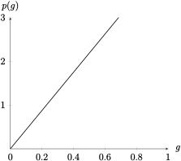
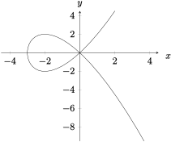
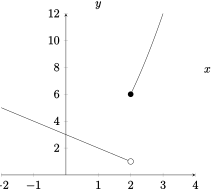

Section 1.1 Four Ways to Represent a Function
Objectives
Represent relations verbally, numerically, graphically or algebraically and translate between representations.
Determine if a relation is a function, and represent functions using appropriate notation.
Evaluate and graph piecewise functions (including absolute value and step functions).
Determine if a function is even, odd, or neither using multiple representations.
Graphically determine the intervals over which a function is increasing, decreasing, or constant.
Evaluate functions using numerical or algebraic input, particularly difference quotients.
Subsection 1.1.1 Before Class
https://mymedia.ou.edu/media/1.1-1/1_hbkr83p7https://mymedia.ou.edu/media/1.1-2/1_88q73nodSubsubsection 1.1.1.1 Functions
A relation is a rule which links an input variable to an output; given one piece of information, we can determine the corresponding piece. A special type of relation is one called a function.
Definition 1.1.1. Function/Domain/Range.
A function\(f\) is a rule that assigns to each element \(x\) in a set \(D\)one element, called \(f(x)\text{,}\) in a set \(E\text{.}\) The set \(D\) is called the domain of the function. The range of \(f\) is the set of all possible values of \(f(x)\) as \(x\) varies throughout the domain.Definition 1.1.2. Independent Variable/Dependent Variable.
A symbol that represents an arbitrary element in the domain is called an independent variable. A symbol representing an arbitarary element in the range of a function is called a dependent variable.Example 1.1.3.
Let \(C(t)\) represent the number of courses offered campus-wide during the week at time \(t\text{,}\) and \(O(t)\) represent the number of students walking on the South Oval at time \(t\) last Monday. Is \(C\) a function? What about \(O\text{?}\)Example 1.1.4.
Fill out the table with the domain and range of the given function. Write your answer in interval notation.| Function | Domain | Range |
| \(\sqrt{2+x}\) | ||
| \(\dfrac{x^2-1}{x-1}\) | ||
| \(x^3-6.2x^2+x-1\) |
| Function | Domain | Range |
| \(\sqrt{2+x}\) | \([-2,\infty)\) | \([0,\infty]\) |
| \(\dfrac{x^2-1}{x-1}\) | \((-\infty,1)\cup (1,\infty)\) | \((-\infty,2)\cup (2,\infty)\) |
| \(x^3-6.2x^2+x-1\) | \((-\infty,\infty)\) | \((-\infty,\infty)\) |
Example 1.1.5.
Assuming \(h\neq 0\text{,}\) simplify the difference quotient\(\dfrac{f(1+h)-f(1)}{h}\) where \(f(x) = 3x^2 -2x + 1\)Subsubsection 1.1.1.2 Representations of Functions
Example 1.1.6.
The price of gas at a certain 7-11 in Norman was $4.37 per gallon on June 26th.Is this information presented numerically, algebraically, verbally, or graphically?
Represent this situation in the other three ways.
Verbally
-
Numerically:
Gallons 1 2 3 4 5 Price 4.37 8.74 13.11 17.48 21.85 Algebraically: \(p(g) = 4.37g\)
Graphically:

Example 1.1.7.
A rectangular storage container has an open top, and a volume of 20 m\(^3\text{.}\) The length of its base is twice its width. Material for the base costs $5 per square meter; material for the sides costs $3 per square meter. Express the cost of materials as a function of the width of the base.Vertical Line Test.
A curve in the \(xy-\)plane is the graph of a function of \(x\) if and only if no vertical line intersects the curve more than once.
Example 1.1.8.
Are both of these graphs functions? Why or why not?Example 1.1.9.
Below are numerical expressions for the relations \(h\) and \(k\text{.}\) Is \(h\) a function? What about \(k\text{?}\)| \(x\) | 0 | 1 | 1 | 2 | 5 | 6 |
| \(h(x)\) | 0 | 1 | 2 | 3 | 4 | 5 |
| \(t\) | 0 | 1 | 1 | 2 | 5 | 6 |
| \(k(t)\) | 0 | 1 | 1 | 3 | 4 | 5 |
Subsection 1.1.2 Pre-Class Activities
Example 1.1.10.
If \(f(x) = 6x^2 -3x + 1\text{,}\) find the following: \(f(1)\text{,}\) \(f(-2)\text{,}\) \(f(a)\text{,}\) \(f(-a)\text{,}\) \(f(a+1)\text{,}\) \(2f(a)\text{,}\) \(f(2a)\text{,}\) \(f(a^2)\text{,}\) \([f(a)]^2\text{,}\) and \(f(a+h)\text{.}\)\(f(1) = 4, f(-2) = 31, f(a) = 6a^2-3a+1, f(-a) = 6a^2+3a+1, f(a+1) = 6a^2+9a+4, 2f(a) = 12a^2-6a+2\)
\(f(2a) = 24a^2-6a+1, f(a^2)=6a^4-3a^2+1, [f(a)]^2 = 36a^4-36a^3+21a^2-6a+1, f(a+h) = 6a^2+12ah+6h^2-3a-3h+1\)
Example 1.1.11.
Evaluate the difference quotient \(\dfrac{f(x) - f(3)}{x-3}\) for \(f(x) = x^3\text{.}\)Example 1.1.12.
Find the domain of the functions below:\(\displaystyle f(x) = \dfrac{3x^4 - 5}{x^2 +2x - 8}\)
\(\displaystyle g(k) = \sqrt[3]{1-7k}\)
\(\displaystyle h(t) = \sqrt{2-t} - \sqrt{3+t}\)
\(\displaystyle (-\infty,-4)\cup (-4,2)\cup (2,\infty)\)
\(\displaystyle (-\infty,\infty)\)
\(\displaystyle [-3,2]\)
Example 1.1.13.
Without referring to the vertical line test, explain why the graph below is not a function.Subsection 1.1.3 In Class
Subsubsection 1.1.3.1 Piecewise Defined Functions
Definition 1.1.14.
A piecewise function is a function defined by different formulas in different parts of their domains.Example 1.1.15.
A quick example of a piecewise function is the absolute value function:What is \(f(-5)?\) What about \(f(1)\text{?}\)
What is \(f(0)\text{?}\) Why?
Sketch \(|x|\) on the interval \(-5\leq x \leq 5\text{.}\)
\(\displaystyle f(-5) = 5, f(1) = 1\)
\(\displaystyle f(0) = 0\)
- 
Example 1.1.16.
A function \(h\) is defined by \(h(x) = \begin{cases}3-x \amp x \lt 2\\ x^2+x \amp x \geq 2 \end{cases}\)Evaluate \(h(-2)\text{,}\) \(h(3)\text{,}\) and \(h(2)\text{.}\)
Sketch the graph of \(h\)
\(\displaystyle h(-2) = 5, h(3) = 12, h(2) = 6\)
- 
Example 1.1.17.
Write the absolute value function \(f(x) = |2x-3|\) as a piecewise functionSubsubsection 1.1.3.2 Symmetry
Definition 1.1.18. Even/Odd Function.
A function \(f\) is said to be even if it has the property that \(f(-x) = f(x)\text{.}\) A function \(g\) is said to be odd if it has the property that \(g(-x)=-g(x)\)Example 1.1.19.
Determine if the following functions are even, odd, or neither.\(\displaystyle f(x) = x^7 + x^5 - x\)
\(\displaystyle g(x) = 3-x^2\)
\(\displaystyle h(x) = x^2 - x^3\)
Odd
Even
Neither
Subsubsection 1.1.3.3 Increasing and Decreasing Functions
Definition 1.1.20. Increasing/Decreasing.
Let \(f\) be a function defined on some input interval. \(f\) is said to beincreasing if the output values increase on the interval
decreasing if the output values decrease on the interval
Example 1.1.21.
Identify the intervals for which the function is increasing and decreasing.Subsection 1.1.4 After Class Activities
Example 1.1.22.
Evaluate \(h(3), h(0),\) and \(h(2)\) for the function \(h(x) = \begin{cases}3 - \dfrac{1}{2}x \amp x \lt 2\\ 2x - 5 \amp x\geq 2 \end{cases}\text{.}\) Then, sketch the graph of \(h(x)\text{.}\)\(h(3) = 1, h(0) = 3, h(2) = -1\)
Example 1.1.23.
Sketch the graph of \(f(x) = x + |x|\) and \(g(x) = \begin{cases} |x| \amp |x| \leq 1\\ 1 \amp x \gt 1\end{cases}\text{.}\)Example 1.1.24.
If the point \((3,5)\) is on the graph of an even function, what other point must also be on the graph? What about if the function is odd? Justify your answers.Example 1.1.25.
Is the function \(f(t) = t|t|\) even, odd, or neither? Explain.Subsection 1.1.5 Section 1.1 Additional Resources
Subsubsection 1.1.5.1 Functions
What is a Function?
https://www.mathsisfun.com/sets/function.htmlFunctions by Khan Academy
https://www.khanacademy.org/math/algebra/x2f8bb11595b61c86:functions
Subsubsection 1.1.5.2 Piecewise Functions
Quick Introduction to Piecewise Functions
https://www.mathsisfun.com/sets/functions-piecewise.htmlPiecewise Functions by Khan Academy
https://www.khanacademy.org/math/algebra/x2f8bb11595b61c86:absolute-value-piecewise-functions/x2f8bb11595b61c86:piecewise-functions/v/piecewise-function-example
Subsubsection 1.1.5.3 Symmetry
Symmetry of Functions by Khan Academy
https://www.khanacademy.org/math/algebra2/x2ec2f6f830c9fb89:transformations#x2ec2f6f830c9fb89:symmetry
Subsubsection 1.1.5.4 Difference Quotients
How to Solve Difference Quotients
https://study.com/academy/lesson/how-to-solve-the-difference-quotient.html